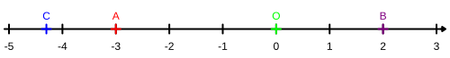
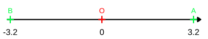
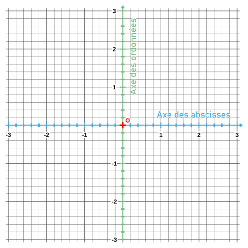
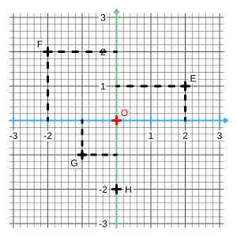

|
Chapitre 1
|
- Nombres Relatifs (Partie 1)
|
Activité Introduction
Voici une carte de prévision météorologique.
-
- A priori, à quelle saison les températures prévues correspondent-elles ?
- Quelle est la température la plus basse ?
La température la plus haute ?
- Classer ces températures en deux catégories en justifiant le choix des catégories.
-
Placer ces températures sur la droite graduée puis placer l'initiale de chaque ville de la carte en fonction de la température prévue.
(P pour Paris, N pour Nice, ...)
-
- Quelle est la différence de températures prévue entre Paris et Marseille ? Entre Nice et Marseille ?
- Comment cela se traduit-il sur la droite graduée les points P et N ?
-
Où fera-t-il le plus chaud :
- À Strasbourg ou à Lille ?
- À Dijon ou à Brest ?
- À Dijon ou à Paris ?
- En utilisant ce qui vient d'être fait, indique le plus grand des deux nombres :
- -12 et -7
- -9 et 2
- -9 et -4
- Ranger les températures de la plus froide à la plus chaude.

Les nombres relatifs :
Exemples :
2 ; 7 ; 3,5 ; +4 ; +6 ; +31,62 ; 2024 ; etc...
Exemples :
-8 ; -17 ; -6,3 ; -42,72 ; -2025 ; etc...
Remarque :
-
Le nombre 0 est à la fois négatif et positif.
Représentation :
Repérage sur une droite graduée :
Exemples :
-
Le point B a pour abscisse +2.
On note : B(+2).
-
Le point C a pour abscisse -4,3.
On note : C(-4,3).

Remarque :
- La distance à zéro est toujours positive.
Exemple :
-3,2 est l'opposé de +3,2.

Comparaison de nombres relatifs :
Exemples :
$-12 < +3$
$-27 < 15$
$-99,24 < +1,2$
$+7 < +16$
$9 < 63$
$+14,3 < 26,2$
$-12 < -5$
$-74 < -2,1$
$-1,2 < -1,1$
Remarques :
- Sur une droite graduée, les nombres sont rangés dans l'ordre croissant de la gauche vers la droite.
- Pour deux nombres négatifs celui le plus à gauche est le plus petit.
Repérage dans le plan :

Remarque :
- Le point O est appelée origine du repère.

Exemple :
- F(-2 ; 2)
- G(-1 ; -1)
- H(0 ; -2)
- O(0 ; 0)
Remarques :
- Tous les points de l'axe des abscisses ont une ordonnée égale à 0.
- Tous les points de l'axe des ordonnées ont une abscisse égale à 0.